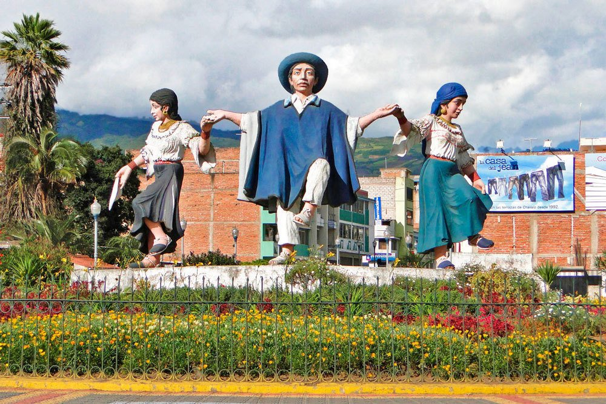

Otavalo, también conocida como San Luis de Otavalo, es una ciudad ecuatoriana; cabecera cantonal del Cantón Otavalo, así como la segunda urbe más grande y poblada de la Provincia de Imbabura. Se localiza al norte de la Región interandina del Ecuador, en la hoya del río Chota, atravesada por el río Tejar, a una altitud de 2550 m s. n. m. y con un clima andino de 16 °C en promedio. Es llamada "Capital Intercultural del Ecuador" por su riqueza cultural e histórica, y por ser el lugar de origen del pueblo quichua de los otavalos, famosos por su habilidad textil y comercial, características que han dado lugar al mercado artesanal indígena más grande de Sudamérica, llamado "La Plaza de Ponchos". En el censo de 2022 tenía una población de 41.718 habitantes, lo que la convierte en la trigésima séptima ciudad más poblada del país. Forma parte de la área metropolitana de Ibarra, pues su actividad económica, social y comercial está fuertemente ligada a Ibarra, siendo "ciudad dormitorio" para miles de personas que se trasladan a Ibarra por vía terrestre. El conglomerado alberga a más de 280.000 habitantes.